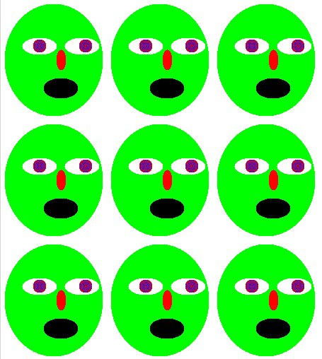

In this lab you will be making images and functions that make images using the teachpack image.ss. To install the teachpack, look in the menu option Language=>Add teachpack, then under the htdp directory. This lab is easily implementable using the Beginning Student language, but if you wish to use another language please put the language you used in the header comments with you name and date. For example if you used the Advanced Student:
;; Name: Andy Terrel ;; Date: October 2, 2006 ;; Class: CMSC 16100-1 ;; Language: Advanced Student
Documentation for the image library can be found by searching the helpdesk (Help=>HelpDesk) for image.ss. You are welcome to use any of the functions defined in the library but you will only need to use the following functions:
I suggest you not worry about the color lists and alpha channels right now, but if you can do some fun stuff with them once we learn a bit about data structures.
Build an image called funny-face, that has at least a nose, a mouth, and eyes. You are welcome to add anything you wish such as eyeglasses, a tie, or various piercings. My suggestion is that you define each feature separately and only use overlay commands to line up the images for the funny face. Make it simple at first and then you can add detail by only manipulating the different features later.
Make a function called rings. It will take a number of rings, total radius, width of each ring, color1, and color2. Have the image make a number of rings that alternate color and have the given width. Do this with recursion. For example my function produces the following:
(rings 3 30 10 'black 'red)
Make a function called grid3x3 that will take three images and a width. The function will return an image that is the three images lined up horizontally by their pinpoints with a specific width apart. The width of 0 should have the images next to each other, not the pinpoints on top of each other. Then have the three images repeated three times vertically. For example my code gives:
(grid3x3 funny-face
funny-face
funny-face
10)

I suggest you make two helper functions, beside and above. Each of these will take two images and a width and put the images side by side or above each other, respectively. A helper function is a function that is used by another function but is not meant to be called by a user. It helps us not have to rewrite code multiple times and provides for more elegant programming. Later in the course you will learn how to make these functions only callable by certain other functions but for now just define them as we have all the other functions. You don't have to use them but remember elegance counts.
Remember to put your name, date, and class at the beginning of the definitions window. Add the following test cases to the bottom of your code and make sure they are the only things that print out when you hit run.
;;;;;;;;;;;;;;;;;;;;;;;;;;;;;;;;;;;;;;;;;;;;;;;;;;;;;;;
;; Test Cases ;;
;;;;;;;;;;;;;;;;;;;;;;;;;;;;;;;;;;;;;;;;;;;;;;;;;;;;;;;
(rings 3 30 10 'black 'red)
(rings 50 100 2 'black 'red)
(rings 100 30 10 'black 'red)
(rings 3 0 10 'black 'red)
(grid3x3 funny-face
funny-face
funny-face
10)
(grid3x3 (move-pinhole funny-face
0
(quotient (image-height funny-face) 2))
(rings 30 30 1 'green 'red)
(move-pinhole funny-face 12
(quotient (image-height funny-face) 4))
10)
Save the definitions window as (your_cnet_id)-Lab02.scm and put it in the dropbox. So for example I would save my file as aterrel-Lab02.scm. Also do yourself a favor and save your file somewhere you can look back at it (email yourself or store it on your own media).